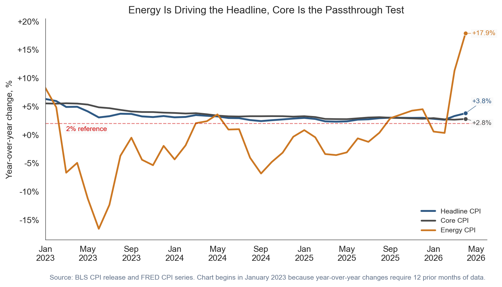
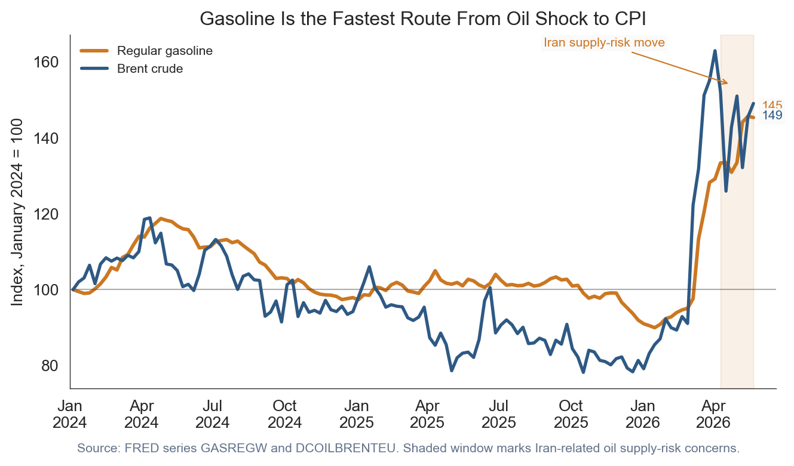
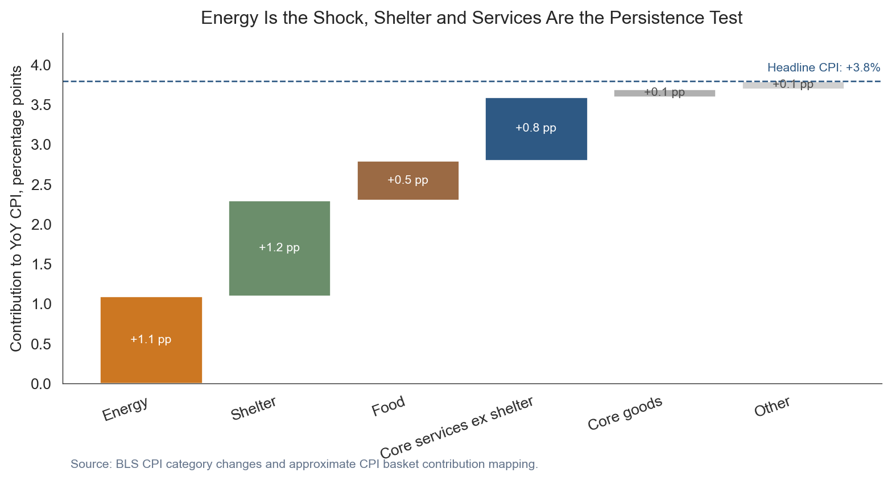
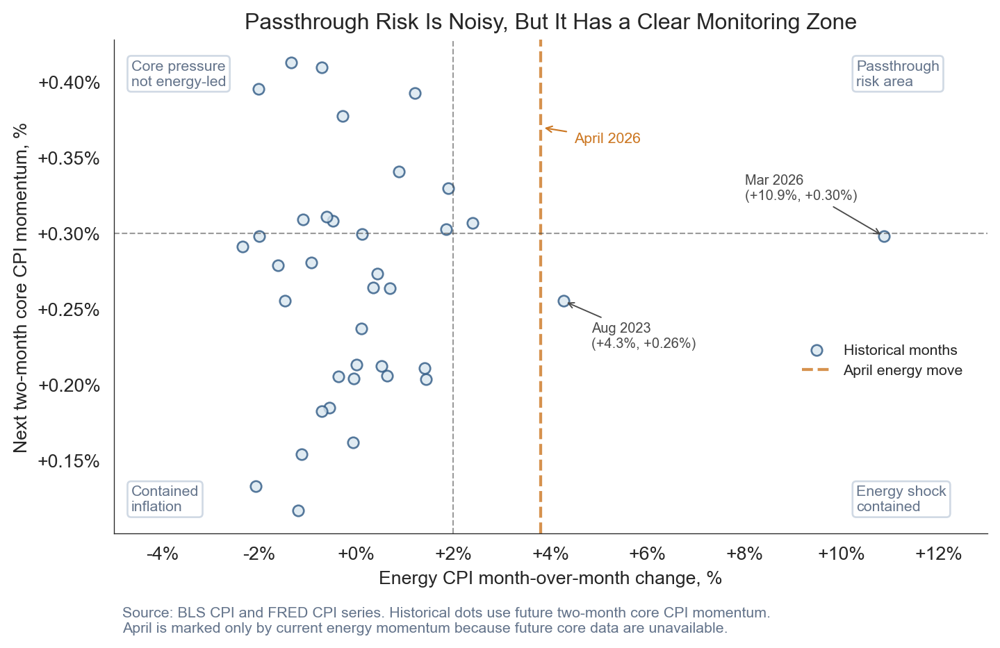
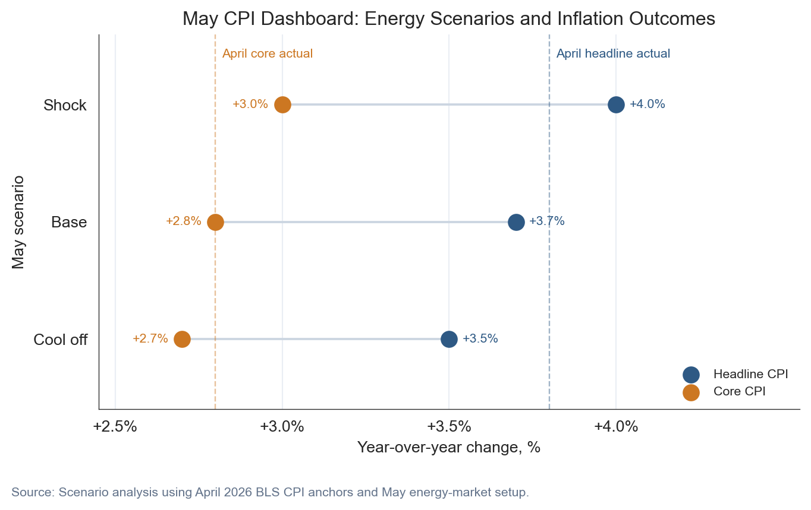

May 2026 Energy Shock Update: Gasoline Passthrough Testing Core CPI Stability
April 2026 CPI showed a +3.8% headline rate, energy up +17.9% year over year, gasoline up +28.4%, and core CPI at +2.8%. The May setup is a passthrough test.
economics
inflation
energy
federal reserve
data visualization
Author
Yoram Gilboa
Published
May 23, 2026
Headline CPI YoY
+3.8%
vs +2% target
Energy CPI YoY
+17.9%
vs March +12.5%
Gasoline CPI YoY
+28.4%
vs March +18.9%
Core CPI YoY
+2.8%
vs +2% target
BLS CPI release dated May 12, 2026 | Market setup through May 22, 2026
The May inflation setup is no longer just a question about whether gasoline is expensive. It is a question about whether expensive gasoline stays contained. The April CPI report put headline CPI at +3.8% year over year, energy at +17.9%, gasoline at +28.4%, and core CPI at +2.8%. That mix matters because energy can move headline inflation quickly, while core inflation tells us whether the shock is leaking into slower-moving prices. The next CPI release, scheduled for June 10, 2026, will arrive just before the June 16-17, 2026 FOMC meeting. That makes May a passthrough test: a gasoline shock is painful, but a gasoline shock that lifts services, goods, and expectations is harder for markets and policymakers to look through.
The practical issue is timing. Energy prices can jump in days, but CPI is measured over a month and core categories often adjust with a delay. A retailer can absorb higher fuel and freight costs for a short period, but a longer shock starts to affect delivery fees, shelf prices, travel costs, and contract negotiations. That is why this update focuses less on whether April was a bad report and more on what May must prove. If gasoline cools and core remains steady, the inflation impulse looks contained. If gasoline stays hot while core services firm again, the story shifts from volatility to persistence. See also: April 2026 CPI post.
NoteReproducing this analysis
This post embeds the full Python workflow. For this render: CPI history fetched directly from FRED graph CSV series during this render. Gasoline and Brent were fetched from FRED where available, then extended to the May 23 scenario window.
Series used include FRED CPIAUCSL, CPILFESL, CPIENGSL, CUSR0000SAH1, GASREGW, and DCOILBRENTEU. April 2026 release anchors, including the +3.8% headline CPI, +2.8% core CPI, +17.9% energy CPI, and +28.4% gasoline CPI values, come from the BLS CPI release archive. Gasoline and Brent series are from FRED, with gasoline sourced from EIA through FRED.
1. The headline problem and the core question
The first chart separates the visible shock from the underlying test. Headline CPI moved back toward the upper end of the recent range because energy accelerated. Core CPI did not explode, but it also did not give policymakers a clean disinflation signal. A core rate near +2.8% is not the same problem as gasoline up +28.4%, but it is the place where the passthrough risk would show up.
For non-expert readers, the distinction is simple. Headline CPI is the full basket households buy. Core CPI strips out food and energy because those categories move around sharply. Energy CPI is not ignored because it is unimportant. It is separated because economists want to know whether the first-round shock becomes a second-round pricing pattern.
Show code
plot_df = cpi[cpi.index >="2023-01-01"].copy()fig, ax = plt.subplots(figsize=(8.6, 4.8))# The three lines separate the inflation story into:# 1. headline CPI, the total consumer basket;# 2. core CPI, the slower-moving basket excluding food and energy;# 3. energy CPI, the volatile shock channel.ax.plot(plot_df.index, plot_df["headline_yoy"], color=COLORS["primary"], linewidth=2.2, label="Headline CPI")ax.plot(plot_df.index, plot_df["core_yoy"], color=COLORS["neutral"], linewidth=2.0, label="Core CPI")ax.plot(plot_df.index, plot_df["energy_yoy"], color=COLORS["warning"], linewidth=2.0, label="Energy CPI")# The 2% line is a reference point for inflation stability. CPI is not exactly# the Fed's PCE target measure, but 2% is still a useful public benchmark.ax.axhline(2, color=COLORS["fed_target"], linestyle="--", linewidth=1, alpha=0.5)ax.text( pd.Timestamp("2023-03-01"),0.7,"2% reference", color=COLORS["fed_target"], fontsize=8, bbox=dict(facecolor="#fafafa", edgecolor="none", pad=1.5, alpha=0.85),)for label, col, color, xy_offset in [ ("Headline", "headline_yoy", COLORS["primary"], (8, 14)), ("Core", "core_yoy", COLORS["neutral"], (8, -5)), ("Energy", "energy_yoy", COLORS["warning"], (8, 0)),]: ax.scatter( [plot_df.index[-1]], [plot_df[col].iloc[-1]], color=color, s=26, zorder=3, edgecolor="white", linewidth=0.5, )# End-of-line labels reduce legend reading. They tell the reader the latest# value directly at the right edge of the chart. ax.annotate(f"{fmt_chg(plot_df[col].iloc[-1])}%", xy=(plot_df.index[-1], plot_df[col].iloc[-1]), xytext=xy_offset, textcoords="offset points", va="center", ha="left", fontsize=8, color=color, arrowprops=dict(arrowstyle="-", color=color, lw=0.7, alpha=0.75, shrinkA=0, shrinkB=3), bbox=dict(facecolor="#fafafa", edgecolor="none", pad=1.5, alpha=0.85), )ax.set_title("Energy Is Driving the Headline, Core Is the Passthrough Test")ax.set_ylabel("Year-over-year change, %")ax.xaxis.set_major_formatter(mdates.DateFormatter("%b\n%Y"))ax.yaxis.set_major_formatter(ticker.FuncFormatter(lambda x, pos: f"{x:+.0f}%"))ax.set_xlim(pd.Timestamp("2023-01-01"), pd.Timestamp("2026-06-01"))ax.set_ylim(-18.5, 20.5)ax.spines["top"].set_visible(False)ax.spines["right"].set_visible(False)ax.legend(loc="lower right", frameon=False, fontsize=8)ax.text(0.01, -0.18, "Source: BLS CPI release and FRED CPI series. Chart begins in January 2023 because year-over-year changes require 12 prior months of data.", transform=ax.transAxes, fontsize=8, color="#64748b")plt.tight_layout()fig.savefig(IMG_DIR /"headline-core-energy-overlay.png", dpi=300, bbox_inches="tight")

Figure 1: Headline CPI, core CPI, and energy CPI show why May is a passthrough test. Energy is the visible shock, while core CPI is the stability check.
2. Why gasoline is the transmission channel
Gasoline matters because it is both visible and fast. Households see it weekly. Delivery firms, airlines, retailers, and service businesses see it in operating costs. Brent crude is not the same thing as retail gasoline, but the two usually move together with a lag. That is why the recent Iran-related supply-risk move matters for the May setup: traders bid oil higher when they expect possible supply disruption, and that can later show up in retail fuel prices.
The chart below indexes weekly regular gasoline and Brent crude to January 2024. Indexed charts make the comparison easier because gasoline is measured in dollars per gallon and Brent is measured in dollars per barrel. The point is not the exact level. The point is direction and timing.
Show code
m = market[market.index >="2024-01-01"].copy()fig, ax = plt.subplots(figsize=(7.2, 4.2))# Gasoline and Brent have different units. Indexed values solve that problem:# both start at 100, so the reader compares relative movement rather than units.ax.plot(m.index, m["gas_index"], color=COLORS["warning"], linewidth=2.2, label="Regular gasoline")ax.plot(m.index, m["brent_index"], color=COLORS["primary"], linewidth=2.0, label="Brent crude")shock_start = pd.Timestamp("2026-04-10")shock_end = pd.Timestamp("2026-05-22")# The shaded window marks the period where oil prices were moving higher on# Iran-related supply-risk concerns. In plain English, this means traders were# paying more for oil because they saw greater risk of disrupted supply.ax.axvspan(shock_start, shock_end, color=COLORS["warning"], alpha=0.10)ax.annotate("Iran supply-risk move", xy=(pd.Timestamp("2026-04-24"), 154), xytext=(-118, 24), textcoords="offset points", arrowprops=dict(arrowstyle="->", color=COLORS["warning"], lw=0.8), fontsize=8, color=COLORS["warning"], bbox=dict(facecolor="#fafafa", edgecolor="none", pad=1.5, alpha=0.85),)for label, col, color, offset in [ ("Gasoline", "gas_index", COLORS["warning"], 7), ("Brent", "brent_index", COLORS["primary"], -8),]:# Label the latest indexed value so the reader can see which series moved# more by the end of the window. ax.annotate(f"{m[col].iloc[-1]:.0f}", xy=(m.index[-1], m[col].iloc[-1]), xytext=(5, offset), textcoords="offset points", va="center", ha="left", fontsize=8, color=color, bbox=dict(facecolor="#fafafa", edgecolor="none", pad=1.5, alpha=0.85), )ax.axhline(100, color=COLORS["neutral"], linewidth=0.8, alpha=0.45)ax.set_title("Gasoline Is the Fastest Route From Oil Shock to CPI")ax.set_ylabel("Index, January 2024 = 100")ax.xaxis.set_major_formatter(mdates.DateFormatter("%b\n%Y"))ax.set_xlim(pd.Timestamp("2024-01-01"), pd.Timestamp("2026-06-20"))ax.spines["top"].set_visible(False)ax.spines["right"].set_visible(False)ax.legend(loc="upper left", frameon=False, fontsize=8)ax.text(0.01, -0.18, "Source: FRED series GASREGW and DCOILBRENTEU. Shaded window marks Iran-related oil supply-risk concerns.", transform=ax.transAxes, fontsize=8, color="#64748b")plt.tight_layout()fig.savefig(IMG_DIR /"gasoline-brent-risk-premium.png", dpi=300, bbox_inches="tight")

Figure 2: Gasoline and Brent crude prices are indexed to January 2024. The shaded May window marks the period when Iran supply-risk concerns lifted oil prices, which can later pass through to gasoline.
3. What is actually inside the +3.8% headline
A headline CPI number is not one thing. It is a weighted basket. Energy was the loudest April story, but shelter still matters because it carries a large weight and moves slowly. Food matters because it is frequent and visible. Core services matter because they are where wages, rents, insurance, and local operating costs can make inflation sticky.
The decomposition below is approximate, but it gives the right reading frame. Energy is large enough to explain a meaningful share of the headline acceleration, while shelter and services are the pieces that decide whether the shock fades or persists.
Show code
dfc = components.copy()running = [0]# A waterfall chart starts each bar where the prior bar ended. That shows how# separate components add up to the total headline inflation rate.for val in dfc["Contribution"].iloc[:-1]: running.append(running[-1] + val)starts = np.array(running)fig, ax = plt.subplots(figsize=(8.4, 4.6))for i, row in dfc.iterrows():# Each bar is one contribution to headline CPI, measured in percentage# points. The label inside the bar is contribution, not the category's own# inflation rate. ax.bar(i, row["Contribution"], bottom=starts[i], color=row["Color"], edgecolor="white") ax.text(i, starts[i] + row["Contribution"] /2, f"{row['Contribution']:+.1f} pp", ha="center", va="center", fontsize=8, color="white"if row["Contribution"] >=0.5else COLORS["neutral"])ax.axhline(stats["headline_yoy"], color=COLORS["primary"], linestyle="--", linewidth=1)ax.text(len(dfc) -1.2, stats["headline_yoy"] +0.12, f"Headline CPI: {fmt_chg(stats['headline_yoy'])}%", color=COLORS["primary"], fontsize=8)ax.set_xticks(range(len(dfc)))ax.set_xticklabels(dfc["Component"], rotation=20, ha="right")ax.set_ylabel("Contribution to YoY CPI, percentage points")ax.set_title("Energy Is the Shock, Shelter and Services Are the Persistence Test")ax.set_ylim(0, 4.4)ax.spines["top"].set_visible(False)ax.spines["right"].set_visible(False)ax.text(0.01, -0.24, "Source: BLS CPI category changes and approximate CPI basket contribution mapping.", transform=ax.transAxes, fontsize=8, color="#64748b")plt.tight_layout()fig.savefig(IMG_DIR /"cpi-contribution-waterfall.png", dpi=300, bbox_inches="tight")

Figure 3: Illustrative contribution map for April 2026 headline CPI, not an exact decomposition. Energy explains much of the visible shock, while shelter and core services keep the persistence question alive.
4. What passthrough would look like
Passthrough does not mean every oil increase instantly becomes core inflation. It means the shock starts appearing later in categories that are not energy: transportation services, delivery-sensitive goods, travel, household furnishings, and eventually some local services. That is why the historical relationship is noisy. Sometimes energy spikes fade before firms reset prices. Sometimes the shock lasts long enough to reach contracts, inventories, and expectations.
The scatter uses monthly energy CPI momentum on the horizontal axis and the next two-month average of core momentum on the vertical axis. Most points cluster near the middle. The risky area is the upper-right: energy is hot now, and core momentum is hot afterward.
April 2026 is different from the historical dots because the next two months of core CPI are not known yet. The chart therefore marks April as a vertical watch line based on its energy shock, not as a dot with an assigned future-core value. That is why April belongs in the monitoring zone: the energy shock has arrived, but the passthrough outcome still depends on May and June core readings.
Show code
scatter = cpi.copy()# The lagged core measure asks a practical passthrough question: after energy# jumps this month, does core inflation run hotter over the next two months?scatter["core_next_2m"] = scatter["core_mom"].shift(-1).rolling(2).mean()hist = scatter.dropna(subset=["energy_mom", "core_next_2m"]).copy()fig, ax = plt.subplots(figsize=(7.6, 5.0))# Each dot is one month. Points farther right are energy spikes; points higher# up are months followed by firmer core inflation.ax.scatter(hist["energy_mom"], hist["core_next_2m"], s=34, color=COLORS["soft"], edgecolor=COLORS["primary"], alpha=0.8, label="Historical months")apr_x = stats["energy_mom"]# April is highlighted separately because its future two-month core reading is# not observable yet. A vertical line avoids assigning a false y-axis value.ax.axvline(apr_x, color=COLORS["warning"], linestyle="--", linewidth=1.6, alpha=0.8, label="April energy move")ax.annotate("April 2026", xy=(apr_x, 0.37), xytext=(18, -8), textcoords="offset points", arrowprops=dict(arrowstyle="->", color=COLORS["warning"], lw=0.8), fontsize=8, color=COLORS["warning"],)ax.axhline(0.3, color=COLORS["neutral"], linestyle="--", linewidth=0.8, alpha=0.55)ax.axvline(2.0, color=COLORS["neutral"], linestyle="--", linewidth=0.8, alpha=0.55)# The dashed lines are not formal model thresholds. They are visual guideposts# for the zone where energy is hot and core momentum is also firm.label_box =dict(facecolor="white", edgecolor="#cbd5e1", boxstyle="round,pad=0.25", alpha=0.9)ax.text(0.02, 0.96, "Core pressure\nnot energy-led", transform=ax.transAxes, fontsize=8, color="#64748b", ha="left", va="top", bbox=label_box)ax.text(0.85, 0.96, "Passthrough\nrisk area", transform=ax.transAxes, fontsize=8, color="#64748b", ha="left", va="top", bbox=label_box)ax.text(0.02, 0.04, "Contained\ninflation", transform=ax.transAxes, fontsize=8, color="#64748b", ha="left", va="bottom", bbox=label_box)ax.text(0.85, 0.04, "Energy shock\ncontained", transform=ax.transAxes, fontsize=8, color="#64748b", ha="left", va="bottom", bbox=label_box)# Label the two high-energy outliers so readers can see these are historical# exceptions, not the central tendency of the relationship.for target_x, target_y, offset in [ (12.0, 0.30, (-75, +20)), (4.2, 0.25, (15, -25)),]: nearest_idx = ((hist["energy_mom"] - target_x).abs() + (hist["core_next_2m"] - target_y).abs() *20).idxmin() nearest = hist.loc[nearest_idx] ax.annotate(f"{nearest_idx:%b %Y}\n({nearest['energy_mom']:+.1f}%, {nearest['core_next_2m']:+.2f}%)", xy=(nearest["energy_mom"], nearest["core_next_2m"]), xytext=offset, textcoords="offset points", arrowprops=dict(arrowstyle="->", color=COLORS["neutral"], lw=0.7), fontsize=7.5, color=COLORS["neutral"], bbox=dict(facecolor="white", edgecolor="none", pad=1.5, alpha=0.85), )ax.set_xlabel("Energy CPI month-over-month change, %")ax.set_ylabel("Next two-month core CPI momentum, %")ax.set_xlim(-5.0, 13)ax.xaxis.set_major_formatter(ticker.FuncFormatter(lambda x, pos: f"{x:+.0f}%"))ax.yaxis.set_major_locator(ticker.MultipleLocator(0.05))ax.yaxis.set_major_formatter(ticker.FuncFormatter(lambda x, pos: f"{x:+.2f}%"))ax.spines["top"].set_visible(False)ax.spines["right"].set_visible(False)ax.set_title("Passthrough Risk Is Noisy, But It Has a Clear Monitoring Zone")ax.legend(loc="center", bbox_to_anchor=(0.88, 0.35), frameon=False, fontsize=8)ax.text(0.01,-0.20,"Source: BLS CPI and FRED CPI series. Historical dots use future two-month core CPI momentum.\n""April is marked only by current energy momentum because future core data are unavailable.", transform=ax.transAxes, fontsize=8, color="#64748b",)plt.tight_layout()fig.savefig(IMG_DIR /"energy-core-passthrough-scatter.png", dpi=300, bbox_inches="tight")

Figure 4: Energy spikes do not always pass through to core CPI. Historical dots show what happened to core inflation after energy moves; April 2026 is a watch line because its next two months of core data are not yet available.
5. A simple May dashboard
The cleanest way to think about May is with scenarios, not a point forecast. If gasoline gives back part of April and early-May pressure, headline CPI can cool even if core stays somewhat firm. If gasoline remains elevated and core services do not ease, headline inflation can stay near +4.0% and the Fed gets a much harder communication problem in June.
The base case below is intentionally modest. It assumes the energy shock remains visible but does not fully spread. That leaves headline CPI near +3.7% and core near +2.8%. The upside scenario is the one to watch because it combines the visible gasoline shock with sticky services.
Show code
fig, ax = plt.subplots(figsize=(7.2, 4.2))# Cleveland dot plot: each energy scenario is one row. Headline and core sit on# the same horizontal line so the gap is easy to compare across scenarios.scenario_order = ["Shock", "Base", "Cool off"]plot_scenarios = scenarios.set_index("Scenario").loc[scenario_order].reset_index()y = np.arange(len(plot_scenarios))headline_color = COLORS["primary"]core_color = COLORS["warning"]for i, row in plot_scenarios.iterrows(): ax.plot([row["Core_YoY"], row["Headline_YoY"]], [i, i], color="#cbd5e1", linewidth=1.4, zorder=1)ax.scatter(plot_scenarios["Headline_YoY"], y, s=95, color=headline_color, label="Headline CPI", zorder=3)ax.scatter(plot_scenarios["Core_YoY"], y, s=95, color=core_color, label="Core CPI", zorder=3)for i, row in plot_scenarios.iterrows(): ax.text(row["Headline_YoY"] +0.04, i, f"{row['Headline_YoY']:+.1f}%", ha="left", va="center", fontsize=8, color=headline_color) ax.text(row["Core_YoY"] -0.04, i, f"{row['Core_YoY']:+.1f}%", ha="right", va="center", fontsize=8, color=core_color)ax.axvline(stats["headline_yoy"], color=headline_color, linestyle="--", linewidth=0.9, alpha=0.45)ax.text(stats["headline_yoy"] +0.02, -0.48, "April headline actual", fontsize=8, color=headline_color, ha="left", va="top")ax.axvline(stats["core_yoy"], color=core_color, linestyle="--", linewidth=0.9, alpha=0.45)ax.text(stats["core_yoy"] +0.02, -0.48, "April core actual", fontsize=8, color=core_color, ha="left", va="top")ax.set_yticks(y)ax.set_yticklabels(plot_scenarios["Scenario"])ax.set_xlabel("Year-over-year change, %")ax.set_ylabel("May scenario")ax.set_xlim(2.45, 4.55)ax.set_ylim(-0.6, len(plot_scenarios) -0.4)ax.invert_yaxis()ax.xaxis.set_major_locator(ticker.FixedLocator([2.5, 3.0, 3.5, 4.0]))ax.xaxis.set_major_formatter(ticker.FuncFormatter(lambda x, pos: f"{x:+.1f}%"))ax.set_title("May CPI Dashboard: Energy Scenarios and Inflation Outcomes")ax.legend(loc="lower right", frameon=False, fontsize=8)ax.spines["top"].set_visible(False)ax.spines["right"].set_visible(False)ax.grid(axis="x", color="#e2e8f0", linewidth=0.8, alpha=0.7)fig.text(0.02, -0.05, "Source: Scenario analysis using April 2026 BLS CPI anchors and May energy-market setup.", fontsize=8, color="#64748b")plt.tight_layout()fig.savefig(IMG_DIR /"may-2026-inflation-dashboard.png", dpi=300, bbox_inches="tight")

Figure 5: May CPI scenarios frame the risk before the June CPI release and FOMC meeting. The main policy question is whether energy pressure remains isolated or arrives with firmer core momentum.
What it means
For the Fed: The April report does not force a June move by itself. It does argue for patience. A central bank can look through a short energy shock more easily than a broad core acceleration. If May shows gasoline strength with core services easing, the inflation story stays uncomfortable but manageable. If May shows gasoline strength and another firm core print, the path to rate cuts becomes narrower.
For consumers: The burden is immediate because gasoline, electricity, and groceries are frequent purchases. Even when core inflation is calmer than headline inflation, households still experience the headline basket. The issue is not just average inflation. It is where the price increases occur.
For businesses: Energy shocks hit input costs first, then pricing decisions. Transportation, retail, restaurants, travel, and insurance-sensitive sectors are the early watch list. The business question is whether the shock is short enough to absorb or persistent enough to justify price resets.
Conclusion
The May setup is best read as a containment test. April gave us a clear headline shock: energy up +17.9%, gasoline up +28.4%, and headline CPI at +3.8%. Core CPI at +2.8% did not signal a runaway inflation cycle, but it did not give a clean all-clear either. The next report matters because it will tell us whether gasoline remains a first-round energy shock or starts to look like broader passthrough. That distinction will shape the June Fed discussion, market rate expectations, and the household budget story going into summer.
What to watch in the June 10 CPI: whether gasoline cools enough to pull headline CPI lower, and whether core services stay steady enough to keep the shock contained.
NoteData Note
CPI values are from the BLS CPI release and FRED CPI series. Gasoline prices use FRED GASREGW, which is sourced from EIA. Brent crude uses FRED DCOILBRENTEU. The May dashboard is scenario analysis, not a forecast. It is designed to show how different gasoline and core-inflation paths would change the inflation narrative before the June CPI release and FOMC meeting.
Data current as of May 23, 2026 market setup; April 2026 CPI release.